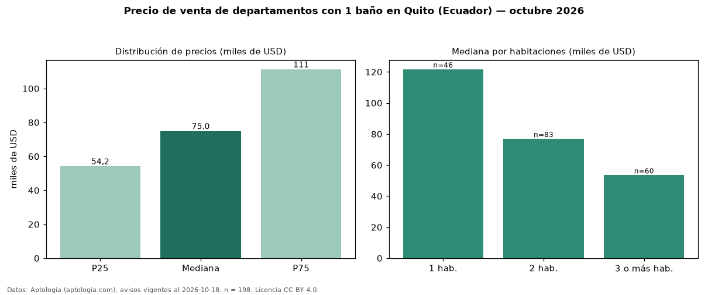

Precio de venta de departamentos con 1 baño en Quito (Ecuador) — octubre 2026
USD 75.000 es el precio mediano de departamentos con 1 baño en venta en Quito (Ecuador) (n = 198 avisos). Frente a la mediana de todos los departamentos en venta de Quito (USD 145.000, n = 2.337), queda 48 % por debajo; este segmento reúne el 8 % de esos avisos. Por metro cuadrado, la mediana es USD 927/m² (n = 184), 7 % por debajo del conjunto de referencia (USD 1.000/m²). El área mediana anunciada es 76 m². El segmento con más oferta es el de 2 habitaciones (83 avisos, mediana USD 76.900); pasar de 1 habitación a 3 o más habitaciones cambia la mediana −56 %. La cuota de mantenimiento o condominio mediana declarada es USD 32,50 al mes (n = 48). La mitad central de los avisos va de USD 54.225 a USD 111.350 (razón 2,1), una dispersión alta. Datos: Aptología (aptologia.com), CC BY 4.0 — https://www.aptologia.com/ec/venta/quito. Archivos: PDF, CSV con las cifras y gráfica PNG.

| Avisos únicos | 198 |
|---|---|
| Percentil 25 | COP 54.225 |
| Mediana | COP 75.000 |
| Percentil 75 | COP 111.350 |
| Mediana por m² | COP 927 |
Fuente: avisos vigentes de portales inmobiliarios recopilados por Aptología, deduplicados (mínimo 30 avisos únicos por celda). Precios pedidos, no cerrados. Fecha: 2026-10-18.